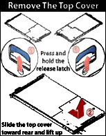
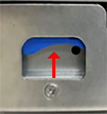
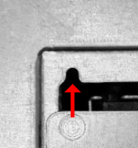
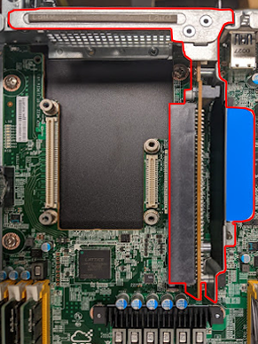
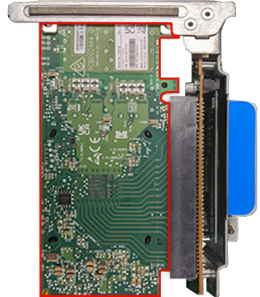
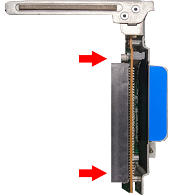
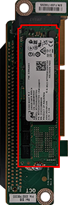
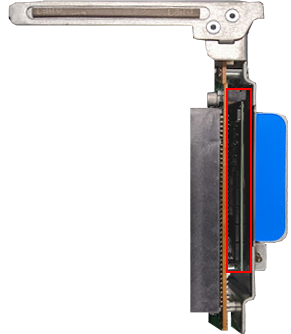
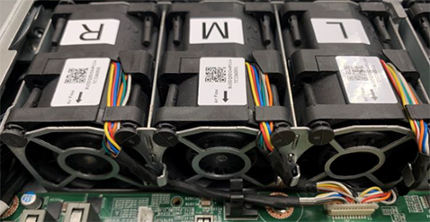

This section explains how to replace hardware components in Quiver 1U Hybrid Gen2 nodes.
To Remove and Replace the Top Cover
Your Quiver 1UH Gen2 chassis has a label with instructions for removing the top cover.

-
To remove the top cover, press the blue latches located near the back, on each side of the node, upwards and slide out the cover towards the front.

-
To replace the top cover, slide it towards the back, ensuring that the guide pin is fixed fully in the guide hole and the blue latches click into place.

To Replace a PCI Express (PCIe) Riser Card
Your Quiver 1UH Gen2 chassis contains a PCIe riser card inserted vertically into the motherboard. The PCIe riser card holds the NIC and M.2 boot drive.
The PCIe riser card installation is toolless.
-
To replace this component, you must first power off the node.
-
To remove the existing PCIe riser card, pull it vertically out of the PCIe slot.

-
To install a replacement PCIe riser card, insert it vertically into the PCIe slot.
To Replace a NIC
Your Quiver 1UH Gen2 chassis contains a NIC inserted horizontally into the PCIe riser card.
Although the NIC installation is toolless, depending on the NIC that ships with your node model, you might have to replace the exterior-facing metal frame on your NIC with a different one. For more information, see Technical Specifications.
-
To replace this component, you must first power off the node.
-
Insert the NIC into the PCIe riser card horizontally.

-
Insert the PCIe riser card vertically into the PCIe slot.
To Replace an M.2 Boot Drive
Your Quiver 1UH Gen2 chassis contains an NVMe boot drive inserted vertically into an M.2 expansion slot on the PCIe riser card. For more information, see NVMe M.2 Boot Drive.
-
To replace this component, you must first power off the node.
-
Remove the two diagonally placed screws that fasten the PCIe riser card’s board to its bracket.

-
Insert the M.2 boot drive into the M.2 expansion slot on the PCIe riser card’s board.

-
Reattach the PCIe riser card to its bracket so that the M.2 boot drive is located between the board and the bracket.

-
Insert the PCIe riser card vertically into the PCIe slot.
Initializing the Replacement Boot Drive
After you replace the boot drive, you must initialize the replacement boot drive by using the Qumulo Core Installer and then rebuild the replacement boot drive by using a script on the node in your cluster.
Step 1: Initialize the Replacement Boot Drive
To get the correct version of the Qumulo Core Installer for the node in your cluster, contact the Qumulo Care Team
-
Power on your node, enter the boot menu, and select your USB drive.
The Qumulo Core Installer begins to run automatically.
-
When prompted, take the following steps:
-
Select
[x] Perform maintenance. -
Select
[1] Boot drive resetand then follow the prompts.
The Qumulo Core Installer initializes the boot drive.
-
-
When the process is complete, the node is powered down automatically.
Step 2: Rebuild the Replacement Boot Drive
-
Power on your node and log in to the node by using the
qqCLI. -
To get
rootprivileges, run thesudo qshcommand. -
To stop the Qumulo Networking Services, run the
service qumulo-networking stopcommand. -
To configure the IP address for the node, run the
ip addr addcommand and specify the node’s IP address. For example:ip addr add 203.0.113.0/CDR dev bond0 -
Ensure that the node can ping other nodes in the cluster.
-
Run the
rebuild_boot_drive.pyscript and specify the IP address of another node in the cluster, the ID of the node whose boot drive has been replaced, and the password of the administrative account of the cluster. For example:Note
If your password includes special characters such as the parenthesis (() or the asterisk (*), use the backslash (\) to escape these characters./opt/qumulo/rebuild_boot_drive.py \ --address 203.0.113.1 \ --node-id 2 \ --username admin \ --password my\(Special\*PasswordFollow the prompts.
-
When the process is complete, reboot the node.
To Replace an HDD
Your Quiver 1UH Gen2 chassis contains 12 or 6 HDDs. For more information, see HDD Drives.
- You can replace this component without powering off the node.
- Sliding out the tray that holds the HDD carriers doesn't interfere with your node's operation.
-
Slide the tray with the HDD carriers out of the chassis.
Caution
Don’t place any weight on the tray with the HDD carriers while the tray is extended. -
Lift up the drive carrier handle and remove the carrier with the HDD from the tray.
-
Remove the three screws from the existing HDD.
-
Remove the existing HDD from its carrier.
-
Install the new HDD in the carrier.
-
Install the three screws in the new HDD.
-
Insert the carrier with the new HDD into the tray and lower the drive carrier handle.
-
Slide the tray with the HDD carriers into the chassis.
To Replace an NVMe Drive
Your Quiver 1UH Gen2 chassis contains 4 or 3 NVMe drives. For more information, see NVMe Drives.
-
To replace this component, you must first power off the node.
-
To remove the existing NVMe drive, pull out the SSD bracket while pressing the blue latch.
-
Remove the four screws from the existing NVMe drive.
-
Remove the existing NVMe drive from the SSD bracket.
-
Install the new NVMe drive in the SSD bracket.
-
Install the four screws in the new NVMe drive.
-
Insert the SSD bracket with the new NVMe drive into the chassis until the blue latch snaps into place.
To Replace a Power Supply Unit (PSU)
Your Quiver 1UH Gen2 chassis contains two PSUs.
You can replace this component without powering off the node.
-
Unfasten the power cord latch and remove the power cord from the existing PSU.
-
To remove the existing PSU, press the blue latch while pulling on the black handle.
-
Slide the new PSU into the chassis.
-
Fasten the power cord latch to the power cord.
To Replace a Fan Module
Your Quiver 1UH Gen2 chassis has two three-fan modules. The fans are marked L (left), M (middle), and R (right). Each module has six rubber clips on each side and latches that hold cables in place.

-
To replace this component, you must first power off the node.
-
Remove the air duct from the existing fan module.
-
Remove the connector cable from the motherboard.
-
Remove the rubber clips from the existing fan module and the cables from their latches.
-
To remove the existing fan module, pull it from its cage.
-
Slide the new fan module into its cage.
-
Install the rubber clips in the new fan module and place cables into their latches.
-
Plug the connector cable into the motherboard.
-
Replace the air duct onto the new fan module.
To Replace a DIMM
Your Quiver 1UH Gen2 chassis has 12 DIMM slots, with a locking latch on each side of each DIMM.
-
To replace this component, you must first power off the node.
-
To remove an existing DIMM, press down on the latches and pull the module upwards.
-
Match the notch on the new DIMM with the protrusion on the DIMM slot.
-
Firmly press the DIMM into the slot until it clicks in and the latches lock.
To identify which DIMM failed, you must use the baseboard management controller (BMC) on the node or another hardware monitoring solution.
Replacing the Node Chassis
After you perform a chassis swap, you must reconfigure the IPMI settings for your node.
Step 1: Remove the Existing Components
-
At the back of the node, disconnect the power cabling from both power supply units (PSUs) and remove both existing PSUs from the node.
-
Disconnect the network cabling from the NIC port and remove the existing NIC from the node.
-
Remove the existing HDDs, NVMe drives, and the NVMe M.2 boot drive from the node.
-
Remove the existing chassis from the server rack.
Important
We strongly recommend using a server lift or that two people perform this task.
Step 2: Install New Components
-
Install the new chassis in the server rack.
Caution
To avoid warping the chassis frame, always keep it level while you insert it into the server rack. Never insert the chassis at an angle and don't apply excessive pressure to it. -
Install the existing HDDs, NVMe drives, and the boot drive in the node.
-
For the NIC, do one of the following:
-
If your replacement chassis comes with a NIC, install the new NIC in the chassis and connect the network cabling to the NIC ports.
-
If your replacement chassis doesn’t come with a NIC, install and connect the existing NIC.
-
-
For the PSUs, do one of the following:
-
If your replacement chassis comes with PSUs, install the new PSUs in the chassis and connect the power cabling to the PSUs.
-
If your replacement chassis doesn’t come with PSUs, install and connect the existing PSUs.
-
-
Boot by using the latest version of the Qumulo Core USB Drive Installer.
-
Select [*] Perform maintenance.
-
Select [2] Perform automatic repair after part replacement (non-destructive).
The part replacement procedure runs and the FVT passed! message appears.
In some cases, after the part replacement procedure, the message
FIX: Run the FVT flash command. appears. Enter 1 as you would for a fixable issue to reboot the node and then repeat the part replacement procedure.